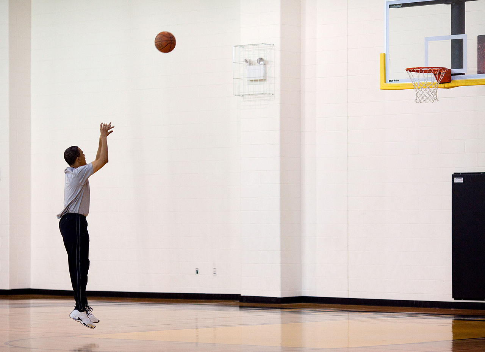

Hand-Eye-Coordination is simply using both your eyes and hands to preform a sequence of actions or a single action that involves a form of movement. A simple example would be using your hands to put a certain amount of streangth into a ball you are going to throw while using your eyes to determine where you want to throw that ball or when using your eyes to look at your phone and using your hands to pick up the phone you are looking at. Both your eyes and hands work together as one when preforming Hand-Eye-Coordination as we do it everyday without thinking about it.
An example of a sport that uses hand-eye-coordination is Basketball, specifically when shooting the ball into the net. By using your hands to arch where you are going to throw the ball into the net while your eyes lock onto where the basketball is going to be thrown to, that is hand-eye-coordination. This can also be applied when dribbling the ball as you are running and looking at where you are going to shoot the ball while using your arm to bounce the ball without looking at the ball.
Source: https://commons.wikimedia.org/wiki/File:Barack_Obama_playing_basketball.jpg
When playing video games in general, you would normally have a controller if playing on console or a keyboard and mouse when playing on PC. Additioanlly, you are looking at what present on screen in order to know what you are looking at, what your objective is, and where you need to move etc. You're not going to be looking at your controller when playing a game. You're not gonna see what you're doing, blinding yourself. What makes hand-eye-coordination come into play is basically using your eyes to target what's moving on screen while using your hands to control your character to either controlling what you are looking at, controlling the character's movement, and preforming character specific actions such as shooting, and using special abilities.